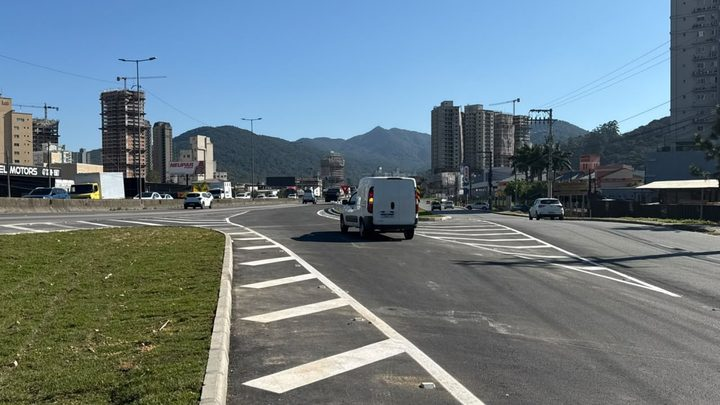
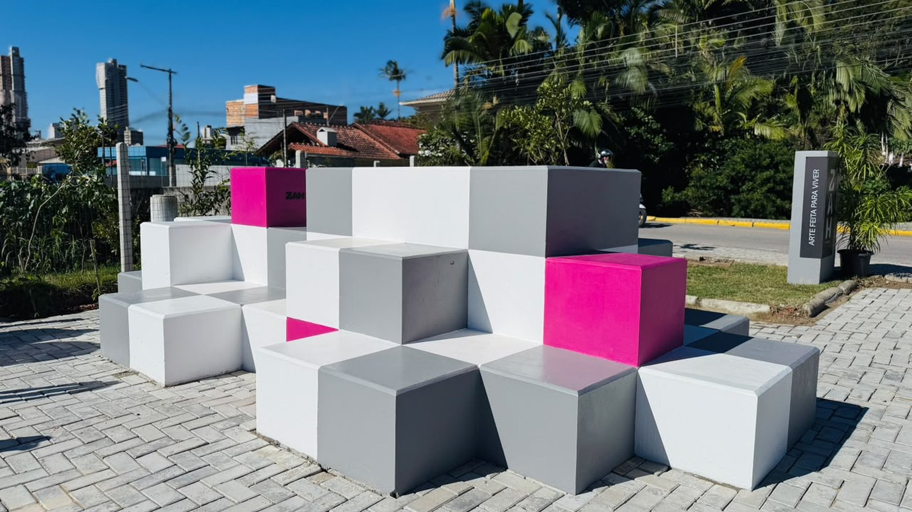
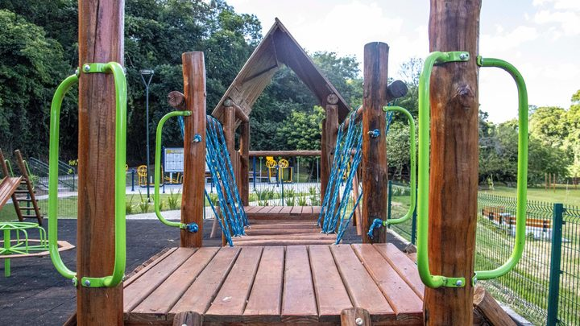
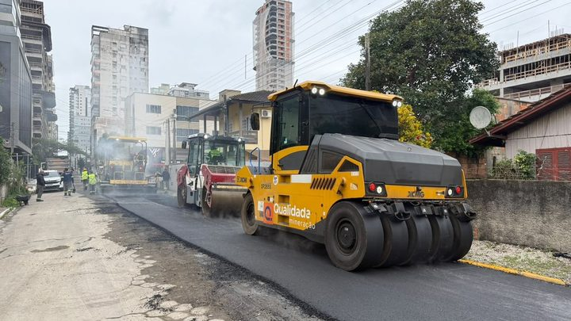

Itapema · InfraestruturaA alça da BR-101 em Itapema abriu um dia depois do prazo anunciado em abril, e 85 dias antes do contrato prorrogado em setembro
A mesma rodovia, o outro lado da conta.
A Prefeitura de Itapema publicou nesta segunda-feira, 28 de setembro, o interesse de duas empresas em adotar três espaços públicos. A KADA Empreendimentos Imobiliários quer o túnel do KM 150 da BR-101, entre Morretes e Meia Praia. A ABC Incorporadora quer o túnel do KM 146, entre o Centro e os bairros Alto São Bento e Sertãozinho, mais a servidão de pedestres entre a Rua 109 e a Orla do Canto da Praia. Abrimos as publicações do Diário Oficial desde maio de 2025 e chegamos a quatro túneis da rodovia dentro da cidade com empresa interessada: 146, 147, 150 e 152. Desses, só o do KM 147 tem termo assinado e publicado. Quem quiser disputar os três espaços novos tem de 29 de setembro a 6 de outubro.
Em 30 segundos · Modo de Leitura, formato original Santa Informa
A Prefeitura de Itapema tem um programa chamado Adote uma Área Pública.
Nele, uma empresa se oferece para cuidar de um espaço da cidade.
A Prefeitura publica o interesse no Diário Oficial.
Quem quiser disputar tem alguns dias para aparecer.
Nesta segunda, 28 de setembro, saiu um aviso novo.
São duas empresas e três espaços.
A KADA Empreendimentos Imobiliários quer o túnel do KM 150.
Fica entre os bairros Morretes e Meia Praia.
A ABC Incorporadora quer o túnel do KM 146.
Fica entre o Centro, o Alto São Bento e o Sertãozinho.
A mesma empresa quer a servidão de pedestres do Canto da Praia.
Ela liga a Rua 109 à orla.
O prazo começa em 29 de setembro.
E termina em 6 de outubro.
São cinco dias.
O pedido é pelo site da Prefeitura, na aba SPU Digital.
Este aviso não é o primeiro.
Abrimos as publicações do Diário Oficial desde maio de 2025.
Em outubro de 2025 saiu o interesse no túnel do KM 147.
Foi a Companhia Águas de Itapema.
Em dezembro de 2025 saiu o do KM 152.
Foi a ZAH Empreendimento S.A.
Somando tudo, são quatro túneis da BR-101 dentro de Itapema.
KM 146, 147, 150 e 152.
Dos quatro, só um tem termo assinado publicado.
É o do KM 147, o Termo de Adoção 001/2026.
Saiu em 31 de março deste ano.
O programa já entregou coisa na rua.
O Parque Pé de Praia foi revitalizado em outubro de 2025.
A Praça Várzea foi entregue em julho de 2026.
A base legal é a Lei 4.711/2025 e o Decreto 091/2025.
A conta de quatro túneis é nossa.
Ela não está somada em lugar nenhum.
InfraestruturaPublicada em Redação Santa Informa

A Prefeitura de Itapema publicou nesta segunda-feira, 28 de setembro, um aviso no Diário Oficial dos Municípios com o interesse de duas empresas em adotar espaço público da cidade. A KADA Empreendimentos Imobiliários quer o túnel do KM 150 da BR-101, entre os bairros Morretes e Meia Praia. A ABC Incorporadora quer o túnel do KM 146, entre o Centro e os bairros Alto São Bento e Sertãozinho, e também a servidão de pedestres que liga a Rua 109 à Orla do Canto da Praia. O aviso cita a Lei Municipal 4.711/2025 e o Decreto 091/2025, que são a base do programa Adote uma Área Pública.
Esse aviso não é o primeiro. Reunimos as publicações do Diário Oficial desde maio de 2025 e montamos o mapa, que não existe somado em lugar nenhum. Em 14 de outubro de 2025 a Prefeitura publicou o interesse da Companhia Águas de Itapema no túnel do KM 147. Em 5 de dezembro de 2025 foi a vez da ZAH Empreendimento S.A., no túnel do KM 152, entre a Meia Praia e o Jardim Praiamar. Com os dois desta segunda, são quatro túneis da BR-101 dentro de Itapema com empresa querendo cuidar: 146, 147, 150 e 152. Dos quatro, um só tem termo assinado publicado: o do KM 147, Termo de Adoção 001/2026, de 31 de março, que descreve a passagem entre os bairros Centro e Casa Branca.
Não é só papel. Em 18 de outubro de 2025 a Prefeitura entregou o Parque Pé de Praia revitalizado, na Rua 225, na orla da Meia Praia, adotado pela H Santos Empreendimentos, com brinquedos novos, pintura, paisagismo e sinalização. Em 23 de julho de 2026 foi entregue a urbanização da Praça Várzea, feita com a ZAH. O aviso do interesse da ZAH naquela praça saiu em 17 de julho, com prazo até o dia 22. A entrega foi no dia seguinte ao fim do prazo.
O prazo do aviso desta segunda começa em 29 de setembro e termina em 6 de outubro de 2026. Quem tiver interesse em algum dos três espaços precisa apresentar projeto e manifestação de interesse pelo site da Prefeitura, na aba SPU Digital, no assunto "outros", com a documentação que a lei e o decreto exigem. Passado o prazo sem outro interessado, o caminho é o termo de adoção, como foi no KM 147.
O resumo de 30 segundos está no topo e a versão completa é o texto acima. Aqui ficam as três leituras da casa sobre o mesmo assunto.
Clara, a otimista
Túnel de rodovia é o lugar que ninguém quer adotar. É escuro, é barulhento, junta água e ninguém tira foto ali. Então quando quatro empresas levantam a mão para cuidar de quatro passagens da BR-101, a notícia é boa. São justamente os pontos em que o morador de Morretes atravessa para a Meia Praia e o do Sertãozinho atravessa para o Centro, a pé, todo dia.
E o programa já tem coisa pronta para mostrar. O Parque Pé de Praia está lá, com brinquedo novo, desde outubro do ano passado. A Praça Várzea está lá desde julho. Quem passa vê. Isso vale mais que qualquer anúncio.
Seu Prudêncio, o criterioso
Merece atenção o tamanho do aviso. São oito linhas para três espaços públicos, sem dizer o que será feito, quanto custa e por quanto tempo a empresa fica responsável. Quem quisesse disputar o túnel do KM 150 teria de montar um projeto em cinco dias sem saber contra o quê está competindo. Uma sugestão útil: publicar junto o resumo do projeto apresentado, que é o que transforma um aviso em disputa de verdade.
Vale acompanhar também a manutenção depois da entrega. Adoção serve para cuidar, não só para inaugurar, e o programa ainda é novo demais para mostrar como fica um espaço adotado dois ou três anos depois. É o tipo de coisa que só o tempo responde, e vale voltar aqui em 2027 para olhar.
Dito isso, o mérito é claro. A Prefeitura pôs o interesse de cada empresa no Diário Oficial, com nome, endereço do espaço e prazo, em vez de simplesmente fechar o acordo. É mais trabalho e é mais transparente. Foi por causa dessas publicações que esta conta de quatro túneis pôde ser feita.
Caco, o sarcástico
Itapema conseguiu o impossível: fez túnel de BR-101 virar item disputado. Daqui a pouco tem fila de espera e lista de interessados para o bueiro da esquina.
Gosto especialmente do prazo. Cinco dias para você montar projeto, juntar documento e concorrer com uma incorporadora que já vinha conversando. É tipo aquele sorteio em que você pode participar, se for rápido, se tiver arquiteto e se souber o que é SPU Digital.
Mas eu passo por baixo daqueles viadutos e sei como é. Se alguém quer pintar, iluminar e limpar aquilo por conta própria, que pinte. Só deixa o nome da empresa numa placa de tamanho civilizado.
Fontes: o fato novo está no aviso Adote uma Área Pública, publicado por Itapema em 28 de setembro de 2026, no Diário Oficial dos Municípios de Santa Catarina, que traz os nomes das duas empresas, os três espaços, a base legal e o prazo de 29 de setembro a 6 de outubro. A conta de quatro túneis é nossa, e sai de mais quatro publicações que abrimos uma a uma: o aviso de 14 de outubro de 2025, com a Companhia Águas de Itapema no túnel do KM 147, a H Santos num parquinho da Rua 165 e a Legendários Brasil num parquinho entre as Ruas 268 e 270; o aviso de 5 de dezembro de 2025, com a ZAH no túnel do KM 152; o aviso de 17 de julho de 2026, com a ZAH na praça do Bairro Várzea; e o extrato do Termo de Adoção 001/2026, de 31 de março de 2026, único termo de Itapema que encontramos publicado. O Edital de Chamamento Público 01/2025, de maio de 2025, é a publicação mais antiga da série e ainda citava a Lei 3.627/2017. As duas entregas estão no portal da Prefeitura: o Parque Pé de Praia revitalizado e a Praça Várzea entregue, de onde vem também a foto do topo. O que muda no trânsito da mesma rodovia está em nossa matéria sobre a alça da BR-101. Os dados permanentes da cidade ficam no nosso Raio-X da Região.

Itapema · InfraestruturaA mesma rodovia, o outro lado da conta.

Itapema · InfraestruturaQuando a praça sai pelo cofre público.

Itapema · Poder PúblicoOutra regra que mexe com quem constrói na cidade.